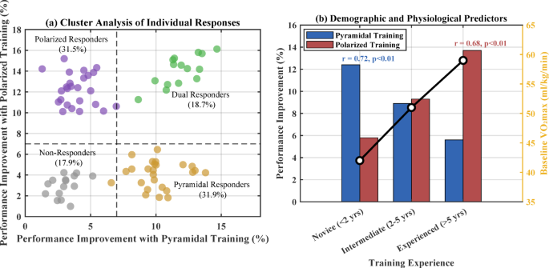
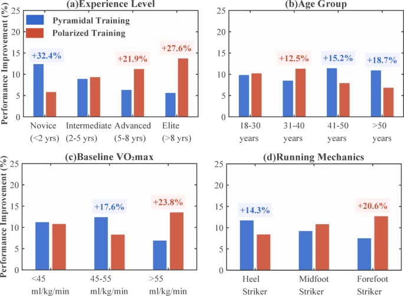

Data, wearables and the evolution of smarter running
Running has changed — and the place this is most obvious is at the marathon finish line: runners stop their watch before they celebrate. Ten to fifteen years ago, tools for motion analysis or VO2 max testing required laboratory settings. Access to these measurements was expensive and they were generally reserved for professional athletes. Today, smart watches and heart rate monitors are readily available and can provide near clinical accuracy for metrics such as heart rate, pace and estimated VO2 max. Even smartphones are capable of recording step counts and flights climbed, making tracking accessible to anyone.
Platforms like Strava or Garmin Connect, which host tens of millions of runners worldwide, also gather hundreds of data points that describe how people train, perform and recover. From a data science perspective, running is ideally suited for machine learning models that can help uncover patterns for optimising performance.
The problem with one-size fits all training
Completing the 42.2 kilometers that make up a marathon is no easy feat. Long before the starting line comes into view, extensive preparation and training needs to be done. How you train can make a big difference in your performance, which is why finding the right training method is key.
At the same time, research consistently shows that endurance training response is highly individual. Even when following the same training program, some runners improve drastically while others experience little benefit. Studies show that 10-30% of people don’t experience meaningful improvements following standard endurance training methods 1. This highlights the issues with one size fits all training methods that do not account for the variability between individuals.
Comparing training methods
There exist many different training programs that vary in duration and intensity, yet many claim to be the best way to improve performance for all runners. These claims are often based on generalised results and broad advice, when in reality what works for one runner might not work for another. Two methods which have shown promising results are the pyramidal and polarised methods.
The pyramidal method emphasizes low and moderate intensity training, focusing mainly on doing longer and slower sessions to help build endurance and maintain a steady pace. In contrast, the polarised method focuses on switching between low and high intensity training, alternating between long, easy sessions and shorter, faster ones to help improve speed.
Why machine learning is useful for personalised training
Since responses to these training methods vary between individuals and are influenced by many variables such as age, experience level and fitness level, machine learning provides a natural framework for modelling these relationships. Instead of using generalised averages, models can use athletes’ characteristics to generate training methods tailored to their needs. Another useful aspect of machine learning models is their ability to adapt over time. Indeed, as more data is collected, models can continuously update their predictions to correspond better to the athlete as they evolve. This makes it possible to adjust training methods based on how an athlete is responding, instead on relying on fixed programs.
What research reveals
In a 2025 research article published in Nature Scientific Reports 2 , the authors explored how different training approaches affected marathon performance and whether one approach could be recommended for all. They assembled 120 participants who trained for 16 weeks following either a pyramidal or polarised training plan, while collecting data such as training habits, fitness levels, heart rate using consumer grade monitoring devices (Garmin watches and chest strap heart rate monitors). They used this data to predict an athlete’s marathon performance improvement as well as which training approach works best for that individual.
In the study, they found that athletes that trained using the polarised method improved their marathon times by around 11 min while those trained using the pyramidal method improved by around 9 mins. While both approaches led to meaningful improvements, the difference between the two methods appeared during the later stages of the race. Indeed, after 30km, athletes trained using the pyramidal method started slowing down while the polarised trained athletes were better at maintaining a steady pace. This suggests that focusing on high intensity training might be useful when training to sustain performance under fatigue.

To understand where these differences come from, the researchers applied unsupervised learning, specifically k-means clustering, to group athletes based on their responses to the different training methods. This revealed four distinct response profiles: athletes who respond better to pyramidal training, those who respond better to polarised training, those who respond well to both and those who do not respond meaningfully to either. This result further highlights the need for personalised training methods tailored to individual characteristics.

Experience level revealed itself to be the strongest predictor of training response. More experienced runners tended to respond better to the polarized approach while novice athletes responded better to pyramidal training. This makes sense since experienced runners are more likely to need stronger stimuli to continue improving, while novice runners would respond better to gradual strength improvement. Similarly fitness levels, measured by the VO2 max, were also good indicators in which training response works best. Athletes with higher fitness levels generally responded better to training programs that included high-intensity components.
Adapting training to the athlete, not the other way around
One of the most significant contributions of this study is demonstrating the usefulness of consumer-grade monitoring devices in developing personalised recommendations. What used to be only possible in laboratory settings can now be achieved by recreational athletes with smart watches.
This development means that marathon training is becoming more and more accessible to everyone. It also means anyone can have access to personalised training plans based on their own characteristics and needs. Choosing a marathon training method has long relied on general rules and averages which overlooked the individuality of training response. The results of the study show that choosing a training method on one’s own needs is the key to optimising performance. By using data that can be gathered using wearable devices and applying machine learning techniques, it becomes possible to adapt the training method to the athlete instead of forcing the athlete to adapt to the method.
The opportunity to use data to make personalised decisions continues to grow as wearable devices become more accurate and widespread. This approach can also be used across other domains to optimise performance and help individuals better understand their own needs.
References:
[1] Reis, F. J., Alaiti, R. K., Vallio, C. S. & Hespanhol, L. Artificial intelligence and machine learning approaches in sports: Concepts, applications, challenges, and future perspectives. Braz. J. Phys. Ther. 28 (3), 101083 (2024). https://doi.org/10.1016/j.bjpt.2024.101083.
[2] Qin, G., Lee, S. & Kim, S. Machine learning-based personalized training models for optimizing marathon performance through pyramidal and polarized training intensity distributions. Sci Rep 15, 41516 (2025). https://doi.org/10.1038/s41598-025-25369-7